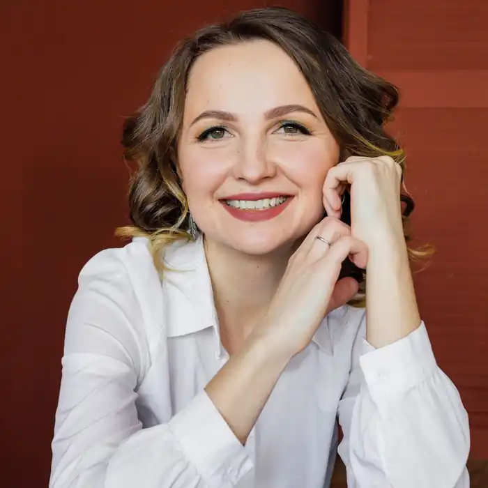

Ольга Ігорівна Саліпа – українська письменниця, поетеса, журналістка, мама двох синів, прес-секретар Хмельницького міського голови. Народилася 12 квітня 1986 року у смт Гусятин, Тернопільської області у сім'ї вчителів. Вірші почала писати з семирічного віку.
Згодом її вірші стали замовляти для шкільної газети, а вже у старших класах поезії з'явились на сторінках колективних збірок місцевих поетів. У 1996 році стала членом клубу талановитої молоді "Молода муза".
З юних років молода поетка брала участь у літературних конкурсах: Вірші поетеси друкувались у районних газетах "Вільне життя", "Свобода", "Ровесник", деякі із них увійшли до шостого випуску збірки молодих літераторів Тернопільщини "Перші ластівки". У той час Ольга часто виходить в ефір на районному радіо в передачі "Молодіжна хвиля". Перша поетична збірка "Я весна" вийшла, коли поетесі було лише 16 років. Навчалася у Гусятинському ТДТУ, була старостою групи, брала активну участь у громадському житті навчального закладу. Після закінчення Гусятинського коледжу вступила до Кам'янець-Подільського педагогічного університету. Проте, закінчивши магістратуру, жодного дня не працювала за фахом, оскільки одразу пішла в декретну відпустку. Народила двійню: синочків Дмитра й Ігоря. Коли їм виповнилося три роки, з сім'єю переїхала на Сумщину, в місто Охтирка, куди чоловік Сергій Саліпа отримав направлення на військову службу. Саме в Охтирці Ольга Ігорівна вперше спробувала себе в ролі журналіста на місцевому телебаченні. А вже згодом стала редактором обласного тижневика. Вона присвячувала весь свій час сім'ї та роботі, а коли була вільна хвилина, бралася за голку і вишивала. До Хмельницького разом із синами повернулась після того, як у зоні АТО загинув її чоловік. Письменниці хотілося бути ближче до своїх батьків і до батьків свого коханого, які проживали у Старокостянтинові. Там Ольга Ігорівна працювала на сайті одного з місцевих Інтернет-видань. Після тривалої паузи (біля 10 років) поетеса повернулась до літературної творчості: свої вірші Ольга Саліпа почала викладати у Фейсбук, але вони слугували лише ліричним підписом до її фотографій. Потім письменниця помітила, що вірші викликають більше зацікавлення, ніж фото. Відтак зрозуміла, що вони мають право на самостійне життя і свої авторські фото вже почала підбирати як ілюстрацію до віршів. У 2019 році поетеса представила свою поетичну збірку "Територія жінки", в яку увійшла майже сотня віршів, написаних у 2017-2018 роках. Основною тематикою поезій Ольги Саліпи є жіноча лірика, тема жінки, жіноча душа та почуття. Її поетична героїня – сильна жінка, яка вміє відчувати і хоче бути слабкою. Книжка має 5 розділів, кожен з них – "кімната" на території жінки: в її домівці та душі. Кожен має різні емоції. Навесні 2019 відбулася презентація книги "Великдень через Збруч", що об'єднала під своєю обкладинкою вісім авторів, які живуть по обидва боки Збруча. До збірки увійшло два оповідання Ольги Саліпи. – "Лаковані черевички" і "То не я". Восени того ж року автори презентували продовження книги – цикл оповідань "Покрова через Збруч". В 2019 році Ольга Саліпа стала співавтором коміксу про супергероя Хмельмена — "Таємниці Хмельвіля", надрукованого накладом 500 примірників в україномовному варіанті та ще 300 — англійському. Поетичні книги: "Я — весна" (2002) "Територія жінки" (2019) "Територія вогню" (2020) Романи: "Оля" (2020) "Теплі історії про справжнє: як бути щасливим попри все" (2021) "Зламані речі" (2021) "Будинок на Аптекарській" (2021) "Облудниця" (2022) "Брошка гімназистки" (2022) "Пташка на долоні" (2022) "Дерево роду", книга перша з циклу "Дикі паростки" (2023) "Без права повернення", книга друга з циклу "Дикі паростки" (2023) "Таємниця замку-корабля", книга перша з циклу "Скарби" (2023)